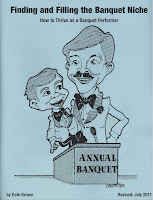

Banquet Performing (NEW)
8/18/2011
Read what Ian Varella has to say about Dale Brown's, Banquet Performing:
"If you are looking for a way to make your banquet shows more fun and memorable, look no further than this book.
"In 1987 I was performing a magic show that included one ventriloquist routine. As a recent college graduate, I was young and single and wanted to see the world. I began applying to various cruise ship companies to gain employment and quickly learned that it was much easier to get booked on a ship as a ventriloquist than as a magician. I quickly began reading every dialogue book I could get my hands on to build a necessary repertoire of routines. One of my main sources was Maher Studios, and one of the books I ordered was the book you are about to read (Dale Brown's, Banquet Performing).
"Today, no matter where I go to perform banquets, I hear the same comment, 'That was great the way you worked our names into your show. You really got Fred good!'
"If you really want to learn how to 'get Fred' in a good natured, memorable and professional manner ... read this book."
* * * * * *
{kind=link}

From Mr. D: And now it gets even better - Dale Brown has rewritten, updated, and expanded his original Banquet Performing book. He more than doubled the content with expanded tips, ideas, and examples, including the part about "How to Customize Your Show" which Ian refers to above. Even if you own the original book published by Maher Studios, I recommend you purchase the revised edition from Dale. You will be glad you did. Just go to http://www.dale-brown.com/ and click on "Store".
Now, thanks to Dale, I have two copies of his new book in hand to award in today's drawing. They go to: Scott Hawkins and Tom Woznaik.